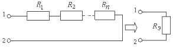
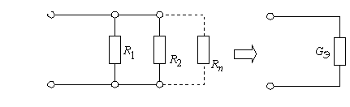

1. Ветвь с последовательно соединенными резисторами R1, R2,..., Rn
может быть преобразована в простую схему с одним резистором (см. рис.),

сопротивление которого
.
2. Параллельно соединенные резисторы с проводимостями G1, G2,...,Gn
можно заменить одним резистором(см. рис.),

проводимость которого
,
где G1 = 1/R1; G2 = 1/R2;...; Gn = 1/Rn.